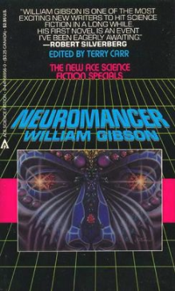

Neuromancer is a 1984 science fiction novel by American-Canadian writer William Gibson. It is one of the best-known works in the cyberpunk genre and the first novel to win the Nebula Award, the Philip K. Dick Award, and the Hugo Award.[1] It was Gibson's debut novel and the beginning of the Sprawl trilogy. The novel tells the story of a washed-up computer hacker hired by a mysterious employer to pull off the ultimate hack.
This is my second paragraph
